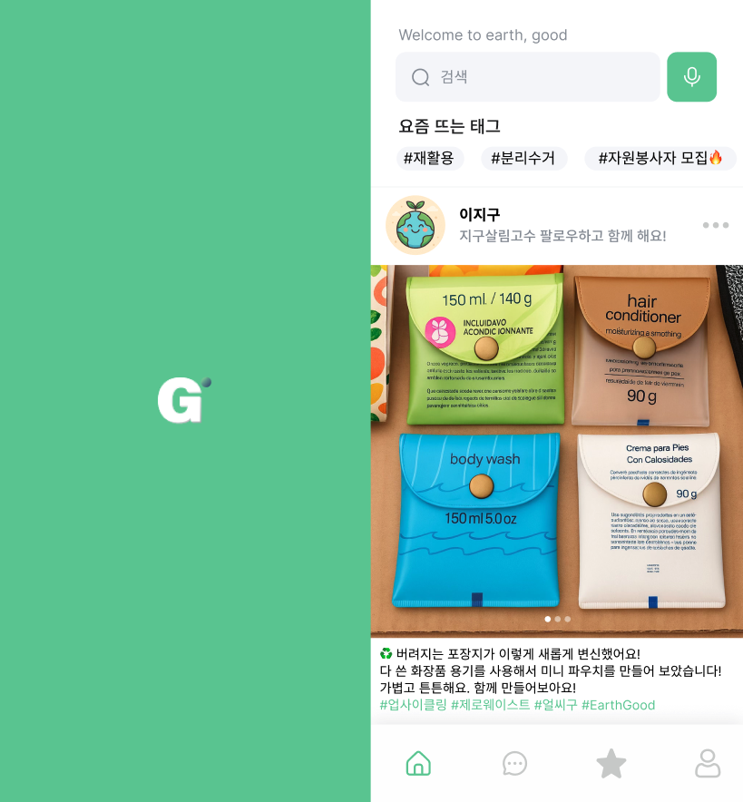

얼쓰굿 (Earth Good) - 환경 앱 디자인
제로 웨이스트(Zero-Waste) 실천을 돕는 모바일 서비스 기획 및 UI/UX 디자인
기간: 2025.9
역할: 서비스 기획, UI/UX 디자인
분야: 모바일 앱/서비스 기획
UI 디자인 결과물
프로젝트 목표
- 사용자들이 쉽고 재미있게 환경 실천 정보를 얻도록 돕는다.
- 제로 웨이스트 실천에 대한 진입 장벽을 낮춘다.
🛠️ 사용 기술/툴
Figma (프로토타이핑)
사용자 리서치
정보 구조 설계 (IA)
UI/UX 디자인
기획 의도 및 컨셉
친환경적인 라이프스타일을 추구하는 현대인들을 위해, '얼쓰굿'은 미션/챌린지 시스템을 도입하여 환경 실천을 게임처럼 재미있게 만들었습니다. 지도를 통해 가장 가까운 제로 웨이스트 샵, 공병 수거함 위치 등을 쉽게 찾을 수 있도록 정보를 구조화했습니다.